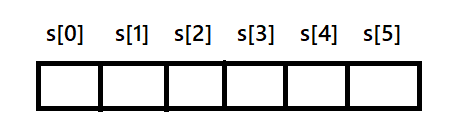

In C programming array of character are called strings. A string is terminated by null character /0.
For example : "MAYURI PANDHARE"
| M | A | Y | U | R | I | P | A | N | D | H | A | R | E |
|---|
Strings are declared in c in similar manner as arrays. Only differences is that, strings are of char type.
char s[5] 
String can access size-1 character i.e. if size is 20 the only 19 characters can be stored.
| Library | Description | Output |
|---|---|---|
| strlen() | To calculate number of characters present in the string strlen() function is used which counts no of characters upto the NULL(/0)
character and returns integer value. e.g. char str[20]="Sangli"; strlen(str); |
5 |
| strupr() | To convert small letters to capital strupr() function is used which requires string variable as argument. e.g char str[20]="Mayuri Pandhare"; strupr(str); |
MAYURI PANDHARE |
| strlwr() | To convert capital letters to small strlwr() function is used which requires string variable as argument. e.g char str[20]="MAHARASHTRA"; strlwr(str); |
maharashtra |
| strrev() | To reverse the string strrev() function is used. e.g char str[20]="Welcome"; strrev(str); |
emocleW |
| strcpy() | To copy one string to another strcpy() function is used. This function requires two string type arguments from them, first is
where we have to copy and second is from where we have to copy. e.g char str1[20]="India"; char str2[20]; strcpy(str2,str1); |
India |
| strcat() | To concatenate two string strcat() function is used which adds another string to present string. e.g char str1[20]="Rohit"; char str2[20]="Sharma"; strcat(str1,str2); |
RohitSharma |
| strcmp() | To compare two strings strcmp() function is used which adds another string to present string e.g char str1[20]="Institute"; char str2[20]="Office"; strcmp(str1,str2); |
Strings are not equal |